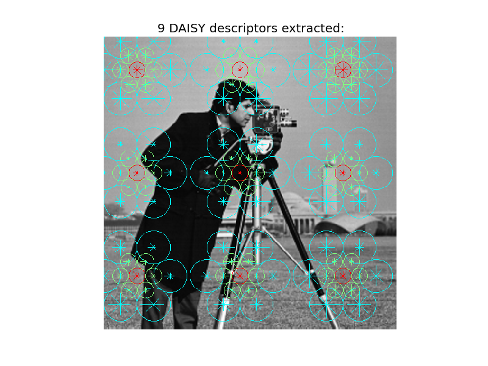

The DAISY local image descriptor is based on gradient orientation histograms similar to the SIFT descriptor. It is formulated in a way that allows for fast dense extraction which is useful for e.g. bag-of-features image representations.
In this example a limited number of DAISY descriptors are extracted at a large scale for illustrative purposes.
from skimage.feature import daisy
from skimage import data
import matplotlib.pyplot as plt
img = data.camera()
descs, descs_img = daisy(img, step=180, radius=58, rings=2, histograms=6,
orientations=8, visualize=True)
plt.axis('off')
plt.imshow(descs_img)
descs_num = descs.shape[0] * descs.shape[1]
plt.title('%i DAISY descriptors extracted:' % descs_num)
plt.show()
Python source code: download (generated using skimage 0.9.0)